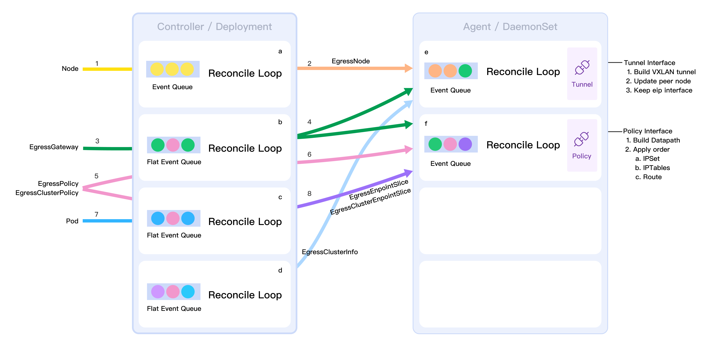

Egress IP
Summary
Updated EgressGateway CRD field to support setting EIP ranges, adjusted EgressGatewayEgressPolicy to tenant level, can select referenced EgressGateway, EgressGateway CRD added field to limit referenced tenants. The above adjustments allow different EgressGatewayPolicy to be assigned to different EIPs, which allows flexible planning of services according to different needs and flexible planning of cluster egress networks, and tenant-level resources allow different roles to carry out egress policy management. Add EgressEndpointSlice CRD to aggregate workloads in cluster policy matching to improve the scalability and performance of EgressGateway.
Motivation
The current release of EgressGateway v0.1.0 supports the use of Egress Gateway's node IPs as egress IPs, which fulfills the ability to aggregate traffic for services that need to go out of the cluster. In a cluster, there are usually dozens or even hundreds of non-accessible services, in which many applications need to access different external networks, and a single EIP is overstretched under certain restrictions or rules, such as different EIPs have non-accessible firewall policies, and different EIPs have different access bandwidths. Different EIPs with different access bandwidths can be assigned to different applications or services through EgressGatewayPolicy, which can be managed at a fine-grained level to avoid potential security issues.
Objectives
- Support setting Egress IP ranges.
- Support setting tenant-level EgressGatewayPolicy.
- Improve the performance and scalability of EgressGateway.
- Update of configuration parameters involved in the change
Non-target
- Improve data plane forwarding performance
- Update the project document structure
Design
CRD
EgressTunnel
Used to record tunnel NIC information for cross-node communication. Cluster-level resource that corresponds one-to-one with the Kubernetes Node resource name.
apiVersion: egressgateway.spidernet.io/v1beta1
kind: EgressTunnel
metadata:
name: "node1"
status:
tunnel:
ipv4: "192.200.222.157" # 1
ipv6: "fd01::f2" # 2
mac: "66:50:85:cb:b2:bf" # 3
parent:
name: "ens160" # 4
ipv4: "10.6.1.21/16" # 5
ipv6: "fd00::21/112" # 6
phase: "Ready" # 7
mark: "0x26000000" # 8
- tunnel IPv4 address
- tunnel IPv6 address
- tunnel MAC address
- tunnel parent NIC
- the IPv4 address of the tunnel's parent NIC
- the IPv6 address of the tunnel's parent NIC
- current tunnel readiness stage
- mark address, this is a new segment, generated at creation. Each node has a globally unique label. The label is generated by prefix + unique identifier. The format of the tag is
NODE_MARK = 0x26 + value + 0000,valueis 16 bits and the total number of supported nodes is2^16. The label that is applied when issuing a policy rule depends on the nodes on which the rule's EIP is in effect.
EgressGateway
Used to select a set of nodes to be the Egress gateway nodes, the Egress IP can float in this range. Cluster-level resources.
apiVersion: egressgateway.spidernet.io/v1beta1
kind: EgressGateway
metadata:
name: "eg1"
spec: # 1
ranges:
policy: "Random" # 2
ipv4:
- ""
ipv6:
- ""
nodeSelector: # 3
selector:
matchLabels:
egress: "true"
policy: "AverageSelecton" # 4
status:
nodeList: # 5
- name: node1 # 6
eips:
- ipv4: "" # 7
ipv6: ""
policies: # 8
- ""
- Set the range of Egress IP;
- Supports 3 ways to set a single IP
10.6.0.1, and segments10.6.0.1-10.6.0.10, CIDR10.6.0.1/26; - If the dual-stack requirement is enabled, the number of IPv4 and IPv6 are the same. For this reason, the above CIDRs may not be practical, so the first two are prioritized for implementation;
- the allocation policy of EIP, for the time being, it only supports
Randomrandom allocation. - set the node range and policy for EgressGateway IP to float. 4. policy select the nodes of the gateway;
- policy for selecting nodes, only `AverageSelecton' is supported for the time being.
- Egress Gateway Controller is used to record and display the nodes matched by nodeSelector, for Node update Label or nodeSelector change will cause this field to change, Agent is the consumer of this field, will set the IP of the node belonging to their own node to the default name of
egress. eipNIC. eip` NIC; - the node selected by the EgressGatewayPolicy that references this EgressGateway as the gateway;
- the effective EIP, or null if useNodeIP is
truein the EgressGatewayPolicy; - the field by which the Agent determines which nodes are gateway and non-gateway nodes for which EgressGatewayPolicy.
EgressGatewayPolicy
Used to specify which Pods walk the Egress policy and the IP address used by Egress. Tenant-Level Resources.
apiVersion: egressgateway.spidernet.io/v1beta1
kind: EgressGatewayPolicy
metadata:
namespace: "default"
name: "policy-test"
spec:
egressGatewayName: "eg1" # 1
egressIP: # 2
ipv4: ""
ipv6: ""
useNodeIP: false # 3
appliedTo: # 4
podSelector: # 4-a
matchLabels:
app: "shopping"
podSubnet: # 4-b
- "172.29.16.0/24"
- 'fd00:1/126'
destSubnet: # 5
- "10.6.1.92/32"
- "fd00::92/128"
- select the EgressGateway referenced by the policy;
- the Egress IP access policy;
- If an
ipv4oripv6address is defined at the time of creation, an IP address is assigned from the EgressGateway's.ranges. If a user applies the IP addresses10.6.1.21andfd00:1in policy1 and then creates policy2 with the IP addresses10.6.1.21andfd00:2, an error is reported and policy2 fails to be assigned. .1.21andfd00:2`, then an error is reported and policy2 fails to be assigned; - If the
ipv4oripv6address is not defined anduseNodeIPis true, the IP of the Node in the match of the referenced EgressGateway is used as the Egress address. - If an
ipv4oripv6address is not defined at creation anduseNodeIPisfalse.- An IP address is automatically assigned from the EgressGateway's
.ranges(when IPv6 is turned on. request an IPv4 and an IPv6 address);
- An IP address is automatically assigned from the EgressGateway's
- If
egressGatewayNameis undefined;- Continue to see if the current Namespace label key
egressgateway.spidernet.io/defaulthas the default EgressGateway set, and if it does and this tenant is allowed to use it, assign EgressIP from there; - Continue to see if there is a name for the
defaultglobal default EgressGateway, and if there is and this tenant is allowed to use it, assign EgressIP from there.
- Continue to see if the current Namespace label key
- supports the use of node IPs as Egress IPs (only one selection is allowed);
- select the Pod to which the Egress Gateway Policy needs to be applied; a. Select by Label b. directly specify the network segment of the Pod (a and b cannot be used at the same time)
- Specify the destination address for accessing Egress. If no destination address is specified, all the policy bits in effect will be forwarded to the Egress node if the destination address is not a CIDR in the cluster.
EgressEndpointSlice
Aggregates endpoints in an EgressGatewayPolicy match to improve scalability, only supported if the EgressGatewayPolicy matches Pods using the podSelector method. The number of Endpoints in each EgressEndpointSlice does not exceed 100 by default, and the maximum value can be set. It is a dependent resource of EgressGatewayPolicy.
apiVersion: egressgateway.spidernet.io/v1beta1
kind: EgressEndpointSlice
metadata:
name: "policy-test-dx66t" # 1
namespace: "default"
labels:
egressgateway.spidernet.io/egressgatewaypolicy: "policy-test" # 2
ownerReferences: # 3
- apiVersion: egressgateway.spidernet.io/v1beta1
blockOwnerDeletion: true
controller: true
kind: EgressGatewayPolicy
name: "policy-test"
uid: 1b2ec0a8-b929-4528-8f99-499f981d319e
data:
endpoints: # 4
- podName: "web-app"
ipv4List:
- "172.29.30.123"
ipv6List:
- "xxx"
nodeName: "node1" # 5
uuid: ""
- the name consists of
policy-name-xxxxxfollowed by 5 randomly generated digits; - the name of the EgressGatewayPolicy to which it belongs; 3. the ownerReferences are set synchronously at creation time; and
- the ownerReferences are set synchronously upon creation; 4. a list of endpoints in the match; and
- a list of matched endpoints. 5. the node where the Pod is located;
- the node where the Pod is located.
Data plane rules
The rules to be validated are categorized into three types: all nodes, gateway nodes relative to the EgressGatewayPolicy, and non-gateway nodes.
All nodes
- The rules for tunneling between nodes will not be expanded. 2;
- relabel the traffic that the policy hits. The first time a node becomes a gateway node, it is updated, or it is done once when the node joins, but not later;
iptables -t mangle -N EGRESSGATEWAY-RESET-MARK
iptables -t mangle -I FORWARD 1 -j EGRESSGATEWAY-RESET-MARK -m comment --comment "egress gateway: mark egress packet"
iptables -t mangle -A EGRESSGATEWAY-RESET-MARK \
-m mark --mark $NODE_MARK/0x26000000 \
-j MARK --set-mark 0x12000000 \
-m comment --comment "egress gateway: change mark"
- Maintain the labeling of policy hit flows. It is created directly once and does not need to be updated;
iptables -t filter -I FORWARD 1 -m mark --mark 0x12000000 -j ACCEPT -m comment --comment "egress gateway: keep mark"
iptables -t filter -I OUTPUT 1 -m mark --mark 0x12000000 -j ACCEPT -m comment --comment "egress gateway: keep mark"
iptables -t mangle -I POSTROUTING 1 -m mark --mark 0x12000000 -j ACCEPT -m comment --comment "egress gateway: keep mark"
- policy hits the source IP, destination IP of the ipset;
IPSET_RULE_DEST_NAME=egress-dest-uuid
ipset x $IPSET_RULE_DEST_NAME
ipset create $IPSET_RULE_DEST_NAME hash:net
ipset add $IPSET_RULE_DEST_NAME 10.6.105.150/32
IPSET_RULE_SRC_NAME=egress-src-uuid
ipset x $IPSET_RULE_SRC_NAME
ipset create $IPSET_RULE_SRC_NAME hash:net
ipset add $IPSET_RULE_SRC_NAME 172.29.234.173/32
- Aggregation policy Hits traffic-tagged chains. It is created directly once and does not need to be updated;
iptables -t mangle -N EGRESSGATEWAY-MARK-REQUEST
iptables -t mangle -I PREROUTING 1 -j EGRESSGATEWAY-MARK-REQUEST -m comment --comment "egress gateway: mark egress packet"
- Aggregate chains that do not require SNAT rules. It is created directly once and does not need to be updated;
iptables -t nat -N EGRESSGATEWAY-NO-SNAT
iptables -t nat -I POSTROUTING 1 -j EGRESSGATEWAY-NO-SNAT -m comment --comment "egress gateway: no snat"
iptables -t nat -A EGRESSGATEWAY-NO-SNAT -m mark --mark 0x12000000 -j ACCEPT -m comment --comment "egress gateway: no snat"
- Aggregate chains that require SNAT rules. It is created directly once and does not need to be updated.
`shell
iptables -t nat -N EGRESSGATEWAY-SNAT-EIP
# Need to insert after rules that don't require SNAT to keep the chain at the top
iptables -t nat -I POSTROUTING 1 -j EGRESSGATEWAY-SNAT-EIP -m comment --comment "egress gateway: snat EIP"
Non-Egress Gateway node relative to EIP
- policy hit traffic is labeled to ensure that it can go through the tunnel. where the value of NODE_MARK is determined by the node where the policy corresponds to the EIP.
iptables -A EGRESSGATEWAY-MARK-REQUEST -t mangle -m conntrack --ctdir ORIGINAL \
-m set --match-set $IPSET_RULE_DEST_NAME dst \
-m set --match-set $IPSET_RULE_SRC_NAME src \
-j MARK --set-mark $NODE_MARK -m comment --comment "rule uuid: mark request packet"
- Policy routing rules
- adapting Weave to avoid doing SNAT into the IP of the Egress tunnel. make the switch
iptables -t nat -A EGRESSGATEWAY-NO-SNAT \
-m set --match-set $IPSET_RULE_DEST_NAME dst \
-m set --match-set $IPSET_RULE_SRC_NAME src \
-j ACCEPT -m comment --comment "egress gateway: weave does not do SNAT"
Egress Gateway node relative to EIP
- policy hit traffic. SNAT is done on the way out of the gateway. real-time updates.
iptables -t nat -A EGRESSGATEWAY-SNAT-EIP \
-m set --match-set $IPSET_RULE_SRC_NAME src \
-m set --match-set $IPSET_RULE_DST_NAME dst \
-j SNAT --to-source $EIP
EgressGatewayPolicy Selection of gateway nodes and EIP assignment logic
A policy selects a node as a gateway node based on a gateway node selection policy. The decision to assign an EIP is then based on whether or not to use it, and the assigned EIP is bound to the selected gateway node.
The allocation logic is all for a single EgressGateway, not all EgressGateways.
policy Mode of selecting gateway nodes
- Average selection: when a gateway node needs to be selected, select the node with the least number of nodes as gateway nodes.
- Minimum node selection: try to select the same node as a gateway node.
- Limit selection: a node can only be the gateway node of several policies at most, the limit can be set, the default is 5. Before the limit is reached, the node is preferred to be selected, and other nodes are selected when the limit is reached, and if all the limits are reached, the nodes will be selected randomly.
EIP allocation logic
- Random allocation: choose one randomly among all EIPs, no matter whether the EIP has been allocated or not
- Priority use of unallocated EIPs: use unallocated EIPs first, and then randomly allocate a used EIP if they are all used.
- Limit selection: an EIP can only be used by several policies at most, the limit can be set, the default is 5, before the limit is reached, the EIP will be assigned first, and if the limit is reached, then other EIPs will be selected; if the limit is reached, then the EIPs will be assigned randomly.
EIP Recycling Logic
When an EIP is not used by a policy, it will be recycled, recycling means delete the EIP field in eips.
Others
- dummy card and EIP: each node has only one dummy card named
egress.eip, all EIPs are valid on this node.
# Create the dummy NIC
ip link add egress.eip type dummy
ip link set egress.eip up
# Set EIP
ip addr add 10.6.168.100 dev egress.eip
- Since the EIP is active on the dummy card, you need to configure ARP answering.
sysctl -w net.ipv4.conf.all.arp_ignore=0
# All physical NICs need to be set up for surrogate answering, not sure what kind of NIC they go out from
sysctl -w net.ipv4.conf.xxx.arp_ignore=0
- mangle-FORWARD match Re-tag because
NODE_MARK = 0x26 + value + 0000, so just match the first 16 bits.
iptables -t mangle -I FORWARD 1 -m mark --mark 0x26000000/0x26000000 -j MARK --set-mark 0x12000000 -m comment --comment "egress gateway: change mark"
- Update the ipset content, the CRD aggregates the latest IP content, you can create a temporary ipset and then swap it, which greatly simplifies the ipset operation and improves efficiency.
ipset create egress-dst-v4-xxx-tmp
ipset add egress-dst-v4-xxx-tmp $NEW_IP_RANGE
ipset swap egress-dst-v4-xxx egress-dst-v4-xxx-tmp
Code Design
